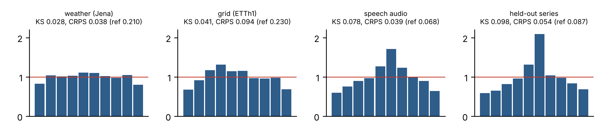
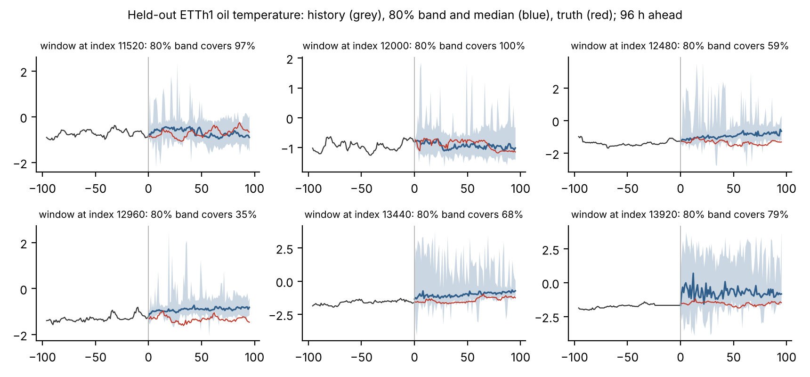

Every widely used sequence model starts from a learned lookup table over a finite alphabet; a large literature changes the mixer (state-space models, long convolutions, linear attention) but not the input. Here the input is ℝ. A byte, an audio sample, a temperature or a timestamp is already a point of the space, with no tokenizer or quantiser. Physical signals arrive at irregular times, at mixed rates and with missing readings; a machine whose input, state dynamics and output all live on ℝ and on continuous time meets them directly.
Position. The goal is not a better language model. The question is what a machine can do when its representation is fixed arithmetic rather than learned lookup, and its clock and output are continuous; we answer with an implementation trained end to end on real data and with measurements, including where it fails. All data are real recordings or real text; no synthetic data are used anywhere in Sections 5–7.
Contributions. (i) A parameter-free basis on ℝ with four exact properties (Section 2). (ii) One machine combining typed streams with role phases, a reversible continuous-time trunk, a one-pass, exactly erasable phase memory with context keys and a closed-form normalised density head (Section 3), with an automated exactness test suite (Section 4). (iii) Training and measurement on a frozen, hash-verified corpus of real data across eight domains, with held-out splits and no-learning references (Sections 5–6). (iv) A list of negative results and limits (Section 7).
Let p1 < … < pR be the first R primes and b(x)k = pk−1/2·e2πi x√pk. Real and imaginary parts are stored side by side. Nothing is a parameter; the argument is a real number, not an index.
Proposition 1 (arithmetic inside the representation). b(a) ⊙ b(c) = A ⊙ b(a+c), Ak = pk−1/2: up to the frozen amplitude, b is a group homomorphism from (ℝ,+) into the torus (measured deviation 1.4×10−10 over 500 random pairs in [−105,105], R = 2048, float64). Proposition 2 (constant norm). ‖b(x)‖² = Σk pk−1 for every x (by Mertens' theorem ≈ log log pR + M); identity is carried entirely by phase. Proposition 3 (translation covariance). ⟨b(x),b(y)⟩ depends on x−y only; the Gram matrix is Toeplitz. Proposition 4 (continuity and injectivity). b is continuous, and since the √pk are ℚ-linearly independent (Besicovitch) the phase vector equidistributes on the torus and b is injective; 1−cos(b(x),b(x+δ)) scales exactly as δ².
The exponent 1/2. Prime p contributes p−2σ to the squared norm; σ = 1/2 is the boundary between domination by a few small primes (σ > 1/2) and by the largest ones (σ < 1/2), where the total diverges only as log log. Its cost is a small effective dimension ((ΣA²)²/ΣA⁴ = 14.3 at R = 2048), which is why the trained machine reads out with a flat amplitude (Section 3). Typed regions. A disjoint family (type·105 + value) costs nothing to add; Section 3 uses this as frozen role phases per stream. Frequency families. Propositions 1–4 only need ℚ-independent frequencies; with log pk instead of √pk the coordinates are the Euler-product terms p−1/2−it of ζ on the critical line, and a tapered prime-power bank recovers the first ten zeros of ζ (max error 0.025).
Events and streams. The input is a sequence of events (value x, stream s, gap Δt). Each stream (a weather variable, an audio channel, bytes of text, a robot joint) is a typed region: its code is b(x/scales) rotated by a frozen role phase ψ(s) = 2π frac(105(s+1)f), the binding of Proposition 1. Values of all streams therefore share one coordinate system; nothing is learned per stream at the input.
Trunk. L reversible blocks y1 = x1 + F(x2), y2 = x2 + G(y1), followed by a per-prime invertible 2×2 map (PhaseLinear). Inside F and G: a continuous-time convolution κ(t) = Re Σm cm e(−λm+iωm)t whose state obeys s ← eaΔts + u and is read out at any offset q as Re Σ cmeamqsm; a circulant phase filter; a low-rank Kuramoto phase coupling; a spectral operator W = U diag(eσ)VT; and a gate α initialised at zero, so every block is born as the identity. The state is O(channels × modes), independent of sequence length. Training uses an exact chunked scan (FFT for regular clocks); generation uses the recurrence one event at a time.
Associative phase memory. A wide prime bank (RM frequencies) gives each event a unit phase key. The pair (context key Kj−1 → event j) is stored as conj(Kj−1) ⊗ vj in an RM×R complex matrix, and reading with the current key returns what followed the same context before (binding/unbinding by Proposition 1). A key of order n binds the last n events under fixed permutations, so different contexts that end in the same symbol have different keys. Writing is one addition; erasing a pair is its subtraction. Training uses an equivalent parallel form; streaming uses the constant-size matrix.
Output. For a continuous stream the next-value density on a window [a,c] is q(x|h) = |⟨b(x),h⟩|²/Z(h) with Z = hTGh̄ and a frozen closed-form Hermitian G (sinc entries); it is non-negative and integrates to one by construction. For a discrete stream (bytes, digits) the same read-out evaluated on the symbol set gives logits log|s(c)|² with a learned temperature. The head has no output vocabulary and no output weights besides a gain.
Adaptation (inference only). For forecasting of new series, each window is expressed relative to the mean and spread of its own look-back and the forecast is mapped back (the RevIN idea [18]); only past values are used.
Extensions implemented and under evaluation (Section 6.8): a calendar clock (phases of absolute time on day/week/year circles), anticipation heads (when the next event comes and from which stream), salience-gated memory writing, and a query head that separates the state from the asked time so that any future moment can be asked directly.
An automated suite (16 tests, all passing; tests/) checks on the implemented machine: streaming equals the full pass (with memory,
context keys, gated writing, clock, anticipation and query head), invertibility of the trunk, normalisation of every density, mixed regular
and irregular clocks with checkpointed gradients, the query head's state is independent of the asked time, and reading several future
moments from one state equals stepping to each. On the trained 17.5 M model: streaming vs full pass relative difference
1.7e-06; inverse relative error 1.9e-11 (float64); density integrals
0.999990–1.000018.
Corpus (real data only, frozen with SHA-256 manifest). Jena climate (6 variables, 10 min) [24]; ETT electricity transformer (7 variables, hourly) [19]; VIX daily close and S&P 500 monthly returns; Free Spoken Digit Dataset audio (8 kHz) [25]; public-domain books and the Brown corpus (bytes); 243 country–capital facts. Large corpus: ten public forecasting collections of the Chronos/Monash archives [14,26] (electricity, traffic, weather, solar, taxi, exchange rates, air quality, Uber, wind, pedestrians) and a 400 MB sample of FineWeb-Edu [27]. Robot: LeRobot koch_pick_place_5_lego [28] (50 real episodes; 6 joints, 6 motor commands, 8×8 grey camera pixels per position as streams). Anomalies: the real* series of NAB [21] with official labels. Splits are by time or by series/episode; standardisation uses train statistics only.
Main model. R = 1024, L = 8, 8 modes, RM = 512: 17,508,438 parameters. Batches of 32 windows × 512 events, one domain per batch (mix series:0.35,web:0.25,weather:0.08,grid:0.08,market:0.06,audio:0.1,text:0.08), AdamW, 19,128 steps in 200 minutes on one NVIDIA H100; no step was skipped for non-finite loss. Small models (81 k parameters) for ablations were trained on CPU. References. For continuous streams the no-learning reference is persistence with a Gaussian of the train change width; for text the train unigram. They are not competitors; they answer whether the machine learned anything.
| domain (held-out test) | 17.5 M machine | no-learning reference | 81 k machine, CPU (3 seeds) |
|---|---|---|---|
| weather | −1.868 | −1.574 | −1.394 |
| grid | −0.662 | −0.492 | −0.154 |
| market | 0.014 | −0.233 | −0.657 |
| audio | −2.163 | −0.460 | −1.209 |
| text | 2.110 | 4.492 | 4.898 |
| held-out data | events | PIT KS | CRPS | CRPS, Gaussian reference | ratio |
|---|---|---|---|---|---|
| weather (Jena climate) | 7680 | 0.028 | 0.038 | 0.210 | 5.5× |
| electricity transformer (ETTh1) | 7680 | 0.041 | 0.094 | 0.230 | 2.4× |
| market (VIX, S&P 500) | 7680 | 0.048 | 0.093 | 0.092 | 1.0× |
| speech audio (FSDD) | 7680 | 0.078 | 0.039 | 0.068 | 1.7× |
| held-out series (10 collections) | 7936 | 0.098 | 0.054 | 0.087 | 1.6× |

| events removed at random | held-out series | weather |
|---|---|---|
| 0%_removed | −1.606 | −1.870 |
| 50%_removed | −1.092 | −1.287 |
| 75%_removed | −0.538 | −0.668 |
| data | H | machine, adapted MSE / MAE | machine, not adapted MSE | repeat-last MSE / MAE | one-day repeat MSE / MAE |
|---|---|---|---|---|---|
| ETTh2 | 96 | 0.299 / 0.339 | 2.123 | 0.362 / 0.380 | 0.346 / 0.357 |
| ETTh2 | 192 | 0.338 / 0.366 | 2.162 | 0.428 / 0.419 | 0.404 / 0.391 |
| ETTh2 | 336 | 0.362 / 0.388 | 2.153 | 0.498 / 0.457 | 0.460 / 0.429 |
| ETTh2 | 720 | 0.435 / 0.437 | 2.127 | 0.559 / 0.495 | 0.529 / 0.475 |
| ETTh1 | 96 | 0.741 / 0.513 | 0.722 | 0.972 / 0.613 | 0.513 / 0.437 |
| ETTh1 | 192 | 0.763 / 0.530 | 0.791 | 0.955 / 0.615 | 0.571 / 0.462 |
| ETTh1 | 336 | 0.771 / 0.542 | 0.826 | 0.933 / 0.616 | 0.621 / 0.486 |
| ETTh1 | 720 | 0.804 / 0.568 | 0.871 | 0.945 / 0.624 | 0.655 / 0.514 |
| ETTm1 | 96 | 0.764 / 0.492 | 0.913 | 1.054 / 0.606 | 0.414 / 0.389 |
| ETTm1 | 192 | 0.808 / 0.520 | 0.951 | 1.115 / 0.645 | 0.445 / 0.405 |
| ETTm1 | 336 | 0.819 / 0.535 | 0.954 | 1.110 / 0.652 | 0.501 / 0.433 |
| ETTm1 | 720 | 0.841 / 0.554 | 0.975 | 1.133 / 0.676 | 0.574 / 0.466 |
runs/gpu/main/diag_ett.json). With adaptation it is below both naive
baselines on ETTh2 at every horizon. On ETTh1/ETTm1 it is below repeat-last but above one-day repeat: fed-back median roll-outs flatten the
daily cycle (Figure 2).
| memory key (no trained weights) | RM | exact capital recalled | characters correct |
|---|---|---|---|
| previous event only (order 1) | 4096 | 0.0% | 7.9% |
| context key, order 8 | 4096 | 61.7% | 73.3% |
| context keys, orders 4+8+12 | 4096 | 70.0% | 78.1% |
| context keys, orders 4+8+12 | 16384 | 80.2% | 87.2% |
| variant | weather | grid | market | audio | text |
|---|---|---|---|---|---|
| joint (full machine) | −1.394 ± 0.012 | −0.154 ± 0.006 | −0.657 ± 0.056 | −1.209 ± 0.004 | 4.898 ± 0.052 |
| staged curriculum | −1.406 ± 0.005 | −0.151 ± 0.008 | −0.638 ± 0.013 | −1.228 ± 0.007 | 5.392 ± 0.078 |
| − memory | 0.079 ± 0.054 | 0.415 ± 0.078 | −0.464 ± 0.122 | −1.139 ± 0.019 | 4.860 ± 0.160 |
| − PhaseLinear | −1.379 ± 0.003 | −0.125 ± 0.006 | −0.604 ± 0.052 | −1.193 ± 0.006 | 4.918 ± 0.008 |
| − Kuramoto coupling | −1.391 ± 0.006 | −0.152 ± 0.000 | −0.624 ± 0.007 | −1.204 ± 0.007 | 4.883 ± 0.008 |
| amplitude-weighted read-out | −1.391 ± 0.004 | −0.171 ± 0.003 | −0.714 ± 0.040 | −1.250 ± 0.007 | 4.898 ± 0.068 |
| + context-keyed memory (1,4,8) | −1.378 ± 0.002 | −0.103 ± 0.011 | −0.741 ± 0.064 | −1.213 ± 0.004 | 5.065 ± 0.110 |
| variant (2 seeds, 3000 steps) | weather | grid | market | audio | text | ETTh1 H96 | ETTm1 H96 |
|---|---|---|---|---|---|---|---|
| base | −1.533 | −0.229 | −0.846 | −1.328 | 4.417 | 0.884 | 0.892 |
| + clock | −1.517 | −0.248 | −0.784 | −1.357 | 4.441 | 0.884 | 0.887 |
| + clock + context memory | −1.529 | −0.265 | −0.827 | −1.364 | 4.441 | 0.876 | 0.877 |
| + clock + anticipation | −1.336 | −0.175 | −0.754 | −1.380 | 3.792 | 0.892 | 0.909 |
Weather → electricity → market → speech → text, 400 steps each, 3 seeds. Average forgetting (best score ever minus final score): fine-tuning all weights 1.81 ± 0.04; replay of 20% earlier data 0.14 ± 0.01; one phase adapter per domain (7,200 parameters each, 9% of the model) 0.00 by construction. Adding all adapters at once fails (weather 0.21 vs −1.24 with its own adapter): adapters are switched, not composed.
Anomaly detection. Surprise (−log predicted density) per reading on the 47 real NAB series, 110 labelled windows:
| normalisation / rule | point AUC | windows detected | alarm precision |
|---|---|---|---|
| running normalisation, fixed rule | 0.473 | 13/110 | 0.102 |
| calm-period normalisation, fixed rule | 0.519 | 36/110 | 0.158 |
| calm, rule chosen on the other half (2-fold) | — | 40/110 | 0.139 |
World model of a real robot arm. Trained on 40 real pick-and-place episodes (3–4 k steps, 81 k parameters, CPU), test NLL on the 10 held-out episodes is joints −1.77 / −1.80, pixels −1.08 / −1.03 (2 seeds), against −2.54 and −1.56 for hold-last. Replacing the motor commands with those of another episode makes the real joints less likely in both seeds (−1.742 vs −1.769; −1.777 vs −1.801), so the commands are used, but the effect is small and 1-second imagination is worse than hold-last.
Fixed sinusoidal codes. Random Fourier features [1] and sinusoidal/rotary position codes [2,3] use frozen frequencies for kernels or positions; here a frozen prime bank is the input representation of every value. Vector-symbolic and holographic memories [4,5,6] bind by elementwise product of phase vectors; our memory is such a memory, used inside a trained sequence model with context keys and with the group law of Proposition 1, and linear/fast-weight memories [7] are the closest learned relatives. State-space and continuous-time models [8,9,10] and neural ODE/CDE models for irregular series [11,12,13] share the continuous-time state; our convolution is a sum of damped complex exponentials read out at an arbitrary offset, inside reversible blocks [15]. Byte-level models [16,17] remove the tokenizer but keep a learned table over 256 symbols. Probabilistic forecasting models [14,20,22] learn output heads or quantise values into tokens; our density is parameter-free with a closed-form normaliser. Per-window normalisation follows [18]; exact unlearning is studied in [29]. Oscillator synchrony follows Kuramoto [30]. What is specific to this work is the combination: one frozen arithmetic basis for every value of every modality, a continuous clock and a continuous output, a one-pass erasable memory, and exactness checks for all of them.
Scale is small: 17.5 M parameters and 200 GPU-minutes; no scaling law has been measured. Fed-back median roll-outs lose daily rhythm; one-step surprise is not an anomaly detector; the robot world model does not beat hold-last; adapters do not compose; markets are not predicted better than persistence. The strengths that hold on real held-out data are calibrated densities, graceful degradation with missing events, exact streaming and invertibility, and a memory that is written in one pass and erased exactly.
Implementation, experiments and drafting were carried out with the assistance of an AI coding assistant (Claude, Anthropic). Compute: one NVIDIA H100 for the main run and small cloud GPUs for evaluation (about 16 USD in total), free CI runners for CPU experiments.
Code, frozen data manifests, every result file and the trained weights are in the repository. Tests: python3 -m pytest -q tests.
Main run: gpu/main_train.py; capabilities: gpu/eval_caps.py; ETT: pfm/ett_eval.py, gpu/eval_ett_adapt.py;
memory: audit/facts_memory.py; ablations: real_train.py; continual: real_continual.py; NAB: gpu/eval_nab.py,
oll/alarm_select.py; robot: data/build_robot.py, robot_world.py; living machine: life.py.
Every number in this paper is generated from those files by paper/build_paper.py. An earlier version of this paper reported experiments on
synthetic signals; they have been removed.